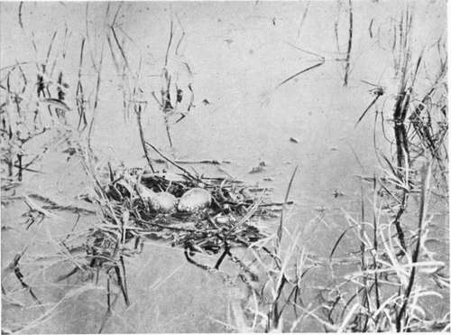
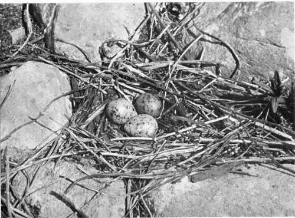

Seeking The Sandhill Crane. Continued
Description
This section is from the book "Wild Life In Canada", by Angus Buchanan. Also available from Amazon: Wild Life in Canada.
Seeking The Sandhill Crane. Continued
A few minutes sufficed to finish breakfast and start on the trail. Our search did not meet "with immediate success, and by eleven in the forenoon our eagerness was rebuffed and considerably abated, while we were still hunting for the lake that held the secret. But at last we had our reward, in all its fulness since it had been so difficult to attain, for, about half an hour later, we came on a small marsh-bordered lake, and there, when we stepped out of the woods into view, two great Cranes arose from its interior, uttering their call of warning, above the peevish screaming of a large colony of Black Terns, as they swung wide and high over the lake, disinclined to depart. Here indeed was the lake we had been searching for, this forest-locked sheet of water, lying calmly at our feet full of meditation and reflection, and unaware that it held for us great treasure. The lake was angular, and had one small island in the middle on which grew an ill-thriven tree or two. On all shores there were extensive reed-marshes, broadly stretching out into the lake, where water-depth was shallow.
We explored along the shore of the lake for some distance, disturbing bird life of many kinds as we went, but ultimately decided that it would be impossible to search thoroughly for the crane's nest without the aid of our canoe. This would mean a very long arduous portage, but Joe, my sturdy old backwoods-man-as keen as I on the quest-himself suggested it, and made light of the toil which he was setting for himself.
To begin with, our task was to blaze and clear a trail back to our camp on lie a la Crosse Lake ; so we set out on the back-trail, seeking the line of clearest passage, and cutting out saplings and overhead branches whenever they would interfere with a clear way for man and shoulder-high canoe. At intervals a clean white " blaze " was sliced on the homeward side of a spruce, pine or tamarac tree, to show clearly our way ahead when we came to return with the canoe. Our small hand-axes struck out quickly and unerringly as onward we pressed.
By late afternoon a long distance had been cleared and blazed, by constant toiling, and we thought we were near to our old camp. Here we were at fault, however, and for an hour could not find our proper course nor come out on the shores of Lake lie a la Crosse. Although we did not know it at the time, we had got too far round to the north-not much, mind you, but just enough to change the whole aspect of the country and lead to confusion.
At dusk, after crossing a spongy muskeg bog with difficulty, we came out on the inner end of a far-reaching inlet bay of the lake. Joe was put out by this time and candidly lost. I, assisted by the compass, was convinced we were north of our camp, but for once Joe was "at sea," and could in no way back up my opinion.
However, after a rest, my counsel having prevailed as to direction, we cut south-east into the woods again.
Nest And Eggs Of Black Tern
Nest And Eggs Of Common Tern. Rocky Island, in an inlet bay above Samoy Lake.
We had not been on the fresh trail more than an hour before we found ground we knew and camp. We were not long in rolling ourselves in our blankets ; and slept the faultless sleep of well-tired and healthy hunters.
Prewarned by constringed wispy grey clouds of the previous evening, we awoke in the morning to find a storm had burst.
For two days we were delayed, while a heavy south-west gale scudded angrily over Lake lie a la Crosse and made it impossible for us to canoe up-shore to the inlet bay where our blazed trail terminated. Had we known at the outset that the storm was to last, we would have cleared an overland trail to the inlet. But that would have entailed considerable labour, so we waited for the change of weather, trusting to luck, and it turned out that luck was not in good humour.
On the third day we were up at 4.15 a.m.- if my watch was right-while the golden glow of dawn was in the east, and the sun was still hidden behind the dark peaks of the spruce-tops. In the crisply cool morning-for the thermometer registered only 4 per cent, above freezing-we started up-shore in the canoe, disembarked at the inlet, and commenced the long portage inland.
You know how a canoe is carried ? . . . The paddles are lashed to the narrow cross-bars- which are the seats of the canoe-in such a position that when the canoe is upturned and hoisted over a man's head, the head slips between the paddle stems just before the spatulated blades, which thereupon descend comfortably on to the broad shoulders of the carrier. In lashing the paddles into position for canoe portage they are longitudinally arranged so that the canoe will be fairly evenly balanced when being carried-if anything, a little more weight should be proportioned to balance behind rather than in front. A chestnut canoe is a heavy man-load, somewhere in the neighbourhood of one hundred pounds, and it is wise to load up carefully and comfortably before starting on an undertaking that tries one's strength to the utmost before the other end of the portage is reached.
Meantime, to return to our undertaking, we had been labouring for hours along the blazed trail, and it was not until the afternoon that we reached our destination-the lake that contained the cranes.
After a brief rest we launched the canoe : assuredly the first craft since the beginning of time to intrude on the placid waters of that unknown lake, set deep in forest seclusion.
We eagerly commenced our search for the crane's nest, urged on by sight of the birds who wildly flew from before our neighbourhood, uttering once or twice their curious call. Our search was a long one; all the marsh shores were examined in vain, and not until evening, when on the island in the lake, did we find the nest. Here, on a marshy point on the south side of the island, to our great delight, we came on the long-concealed nest-a large platform of gathered marsh-wreck built on the water surface among reeds; and therein two large oblong eggs of medium buffish sienna colour (perhaps finely speckled) and with spots and splashes of darker colour.
Now in the case of rare birds' eggs you doubtless know that it is essential to establish their identity beyond any shadow of doubt if the record is to receive recognition and be of scientific value. This is usually done by securing one or both of the parent birds. But in this case I had a double interest in wishing to secure the parents : for all along I had never been sure of the identity of this pair of birds-their apparent colour bothered me. Observing them through Zeiss field-glasses they appeared buffish brown tinged in colour, not the leaden slate-grey of the Sandhill Crane as I knew it in autumn in the plains. (The red on the forehead was very bright, and the neck more greyish than the rest of the specimen.) Was theirs strange plumage of the Sandhill Crane, or could they be Whooping Cranes ? Here was uncommon interest, and I was more keen than ever I had been in my life before to secure those specimens.1
Joe and I soon planned a method of outwitting the cranes. I, with my twelve-bore gun, hid among the willows on the island, while Joe put out on to the lake in the canoe, paddled across it, and landed, and hid himself and canoe in the forest to make believe that we had taken our departure.
I had not long to wait in my hiding-place before my excitement grew intense. The great cranes called, one to the other, appeared in the distance, and soon were swinging overhead, examining the lake beneath. Again and again they passed over the island where I lay hidden, lowering in their flight, but not low enough-they were very wary ; provokingly suspicious.
1 Since this was written I have had opportunity to look over the half-dozen skins of the Sandhill Crane which are in the British Museum. One of those had, on the forebreast, decided sienna-brown colouring, and I now conclude that the specimens above referred to were this species, but of exceptional sienna breast plumage.
At last, as one of the great birds came sailing straight toward me, I thought it within long range and took my chance-Both shots rattled on the great bird, but alas ! it but faltered in its flight for an instant, and passed rapidly away from my discomfited sight.
I felt all was over now-the great chance irrevocably lost; but hoping against reason, I waited on until dark.
Neither bird returned, and sadly I put off for shore when Joe came for me.
We left the nest and eggs untouched on the island, deciding to sleep the night on the lake shore and visit the island again in the morning in the forlorn hope that the cranes would in the meantime return.
We spent a comfortless night, cold-since we had no blankets-and tormented by mosquitoes.
Next morning we were early on the lake, and moved quietly toward the island, while no cranes were seen or heard, foreboding ill for our enterprise. But we were not prepared for the culminating disappointment that awaited us at the island-when we came to the crane's nest it was empty !-the eggs had gone ! Where ? We could not tell; we could only surmise that rats, crows, or the cranes themselves had destroyed them or carried them off.
It was all a terrible disappointment. Great hopes sustained until the final hour ; then nothing but wreckage. For two years I had dreamed of finding the nest and eggs of this species north of Prince Albert, and this result when my dream seemed true !
Like everyone else naturalists have their successes and failures. This was my dark day.
Before leaving the lake we spent an hour among the colony of Black Terns that were just commencing to nest, and obtained some photographs of the few nests that contained their complement of eggs.
Continue to:
- prev: Chapter III. Seeking The Sandhill Crane
- Table of Contents
- next: Chapter IV. On The Great Churchill River